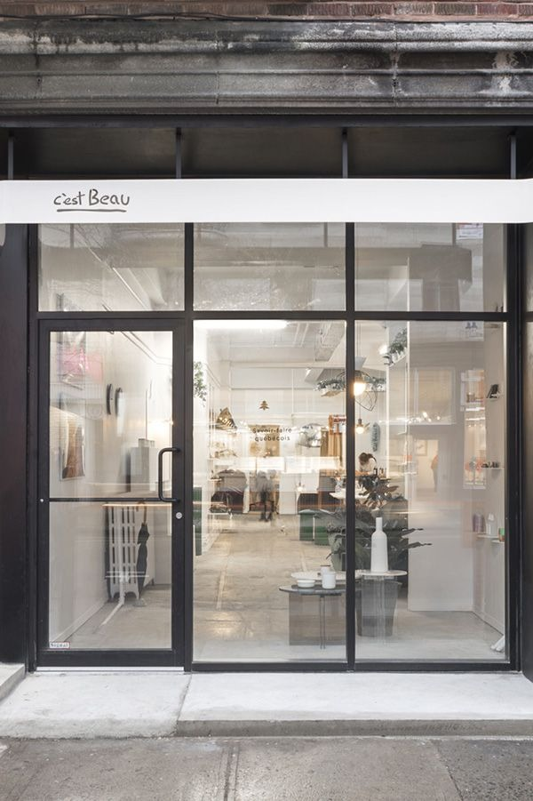
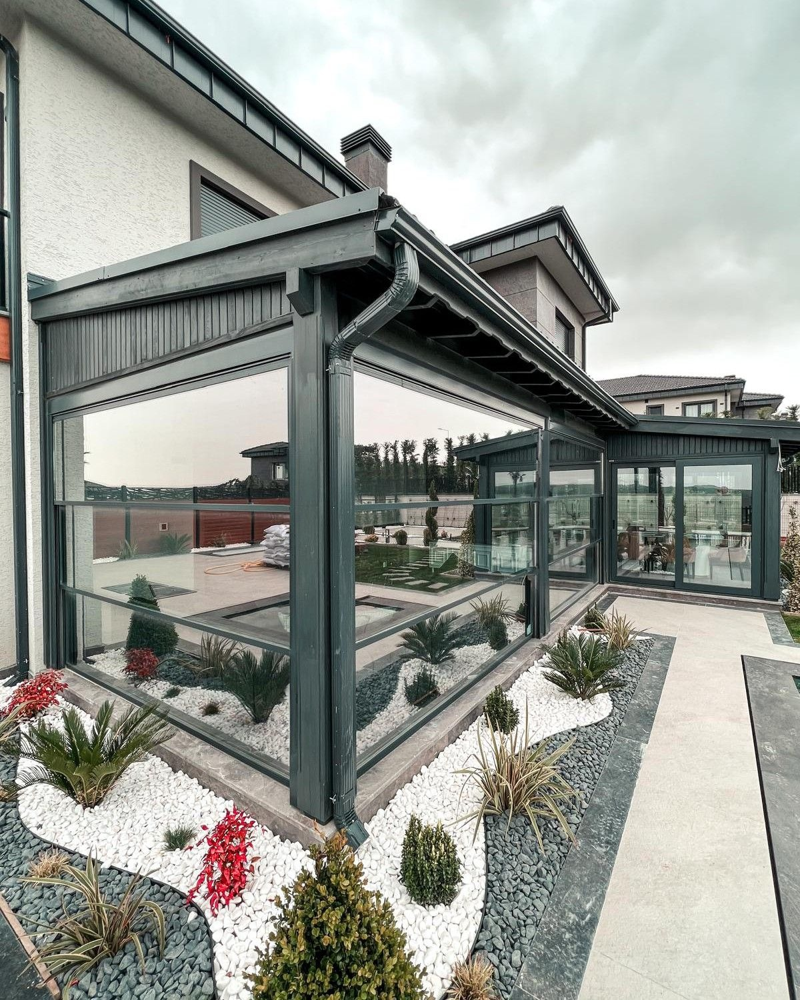
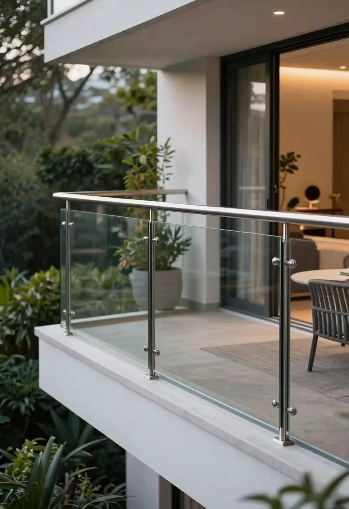
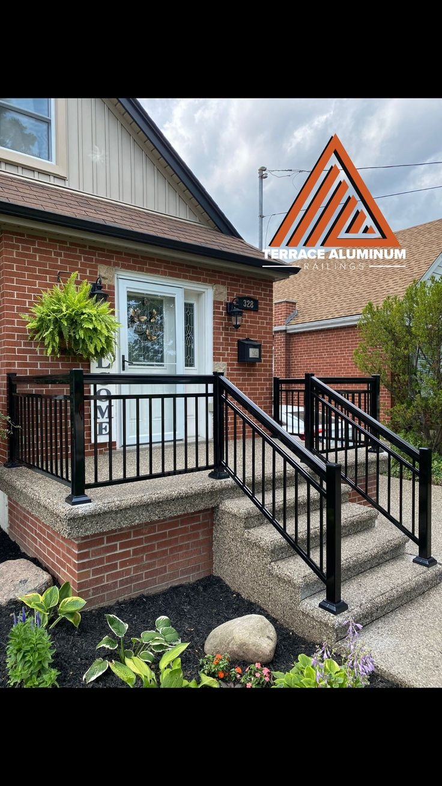

Estetik, hafiflik ve maksimum dayanıklılığı bir arada sunan yeni nesil alüminyum mimarisi. Paslanmaz yapısı, polyamid ısı bariyerleri ve ince profil tasarımıyla evinize panoramik açılar, dört mevsim ise kusursuz izolasyon sağlar.
Ege'nin zorlu iklim şartlarına, deniz tuzuna ve şiddetli rüzgarlara karşı evinizi korurken, ince profilleriyle manzaranızı asla bölmeyen kalıcı mimari çözümler.
İç ve dış alüminyum profilleri arasına yerleştirilen özel ısı bariyerleri sayesinde %40'a varan enerji tasarrufu sağlar. Yazın serin, kışın sıcak bir ortam sunar.
Alüminyumun çelik kadar sağlam yapısı, PVC'ye göre çok daha ince profiller kullanılmasına olanak tanır. Evinizdeki cam alanı ve manzara maksimuma çıkar.
Özellikle sahil şeridindeki nemli havaya karşı %100 paslanmazdır. Çürüme, sararma veya çatlama yapmaz; ilk günkü estetiğini yarım asır boyunca korur.
Elektrostatik toz boya ve eloksal kaplama ile RAL kataloğundaki tüm renklere ve gerçeğinden ayırt edilemeyen doğal ahşap desenlere boyanabilir.
Kalın ve manzarayı kapatan profillere veda edin. Ortadaki çubuğu sağa sola kaydırarak incecik alüminyum mimarisinin yarattığı farkı kendi gözlerinizle görün.
PVC profiller plastiği ayakta tutmak için geniş ve kalındır. Alüminyum ise çelik gücünde olduğu için %30 daha fazla cam alanı ve kesintisiz manzara sunar.
Kaliteli PVC sistemlerimiz güneşe ve UV ışınlarına karşı dirençli yapısıyla sararma ya da solma yapmaz, uzun yıllar formunu korur. Alüminyum ise doğası gereği yüksek boyutsal kararlılık sunarak en zorlu güneş koşullarında bile ilk günkü rengini ve yapısını muhafaza eder..
Eski alüminyumlar soğuğu iletirdi ancak yeni nesil Polyamid Isı Bariyerli Alüminyumlar, günümüzde PVC ile aynı veya daha yüksek yalıtım değerlerine ulaşmıştır.
Alüminyum sadece evinizi değil, dünyamızı da korur. Karbon ayak izini minimuma indiren %100 geri dönüştürülebilir sistemlerimizle yarınlara nefes aldırıyoruz.
Alüminyum, kalitesinden ve yapısal gücünden hiçbir şey kaybetmeden defalarca geri dönüştürülebilir. Dünyada üretilen alüminyumun %75'i hala aktif kullanımdadır.
Üstün ısı yalıtım (Polyamid) bariyerleri sayesinde kışın doğalgaz, yazın ise klima (elektrik) tüketiminizi %40'a varan oranda düşürerek doğayı korur.
Zehirli gazlar salgılamaz. 50 yılı aşkın kullanım ömrü sayesinde sürekli üretim gerektirmez, doğadaki karbon salınımını büyük ölçüde azaltır.
Alüminyum sistemler hakkında en çok merak edilen detayları sizin için derledik.
Hayır, yeni nesil Isı Yalıtımlı Alüminyum (Polyamid bariyerli) sistemlerde terleme sorunu kesinlikle yaşanmaz. İç ve dış sıcaklık farkını kesen bu bariyerler yoğuşmayı sıfıra indirir.
Kesinlikle evet. Argon gazlı ısıcamlar ve 3 odacıklı ısı bariyerleri sayesinde, standart PVC sistemlere eşdeğer ve yeni serilerde çok daha üstün termal yalıtım değerlerine sahiptir.
Alüminyum doğası gereği paslanmazdır. İzmir ve Ege kıyıları gibi deniz tuzunun yoğun olduğu bölgelerde, özel fırın boyası (eloksal) sayesinde çürüme veya sararma yapmadan 50+ yıl dayanır.
Kesinlikle hayır. Alüminyum profillerin elektrostatik boyası toz ve kir tutmayan pürüzsüz bir yapıya sahiptir. Sadece ılık su ve nemli bir bezle silmeniz, yıllarca ilk günkü gibi kalması için yeterlidir.
Alüminyum metalinin doğal sertliği, levye ile zorlama ve esnetilmelere karşı maksimum direnç gösterir. Çok noktalı (ispanyolet) kilit sistemleriyle birleştiğinde evinizi bir kale gibi korur.
Evet. Üçlü EPDM kauçuk contalar ve isteğe bağlı kalın (akustik/lamine) ısıcam kombinasyonları sayesinde dışarıdaki trafik gürültüsünü 39-42 dB seviyesinde düşürerek kusursuz bir sessizlik sağlar.
Şiddetli poyraz rüzgarlarına, yazın kavurucu sıcağına ve kışın denizden gelen tuza karşı evinizi güvence altına alın. İnce profilli alüminyum sistemlerimizle manzaranızı kapatmadan maksimum izolasyon sağlayın.
Ege'nin dört bir yanında, estetik ve üstün mühendisliği bir araya getirdiğimiz seçkin Alüminyum projelerinden kareler.

Panoramik Sürme Alüminyum Sistemleri

Isı Yalıtımlı Katlanır Alüminyum

Slim Kasa Alüminyum Doğrama

Giydirme Cephe ve Alüminyum Kapı